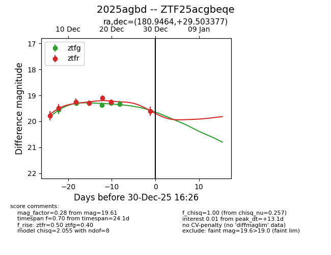
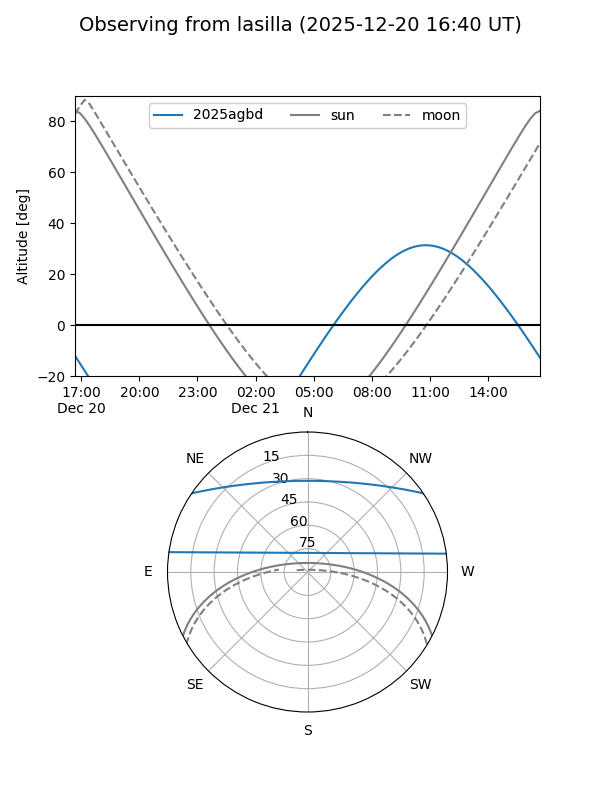
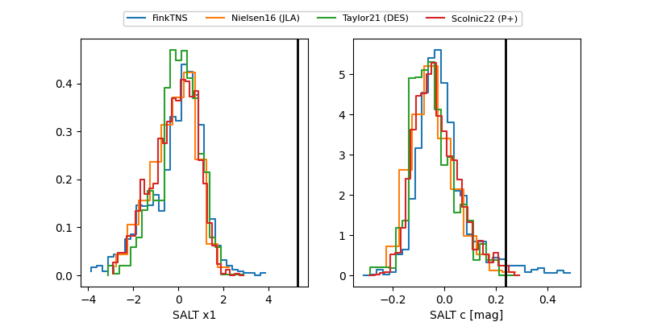

2025agbd
Target 2025agbd at 2025-12-18 14:07
Aliases and brokers:
FINK: fink-portal.org/ZTF25acgbeqe
Lasair: lasair-ztf.lsst.ac.uk/objects/ZTF25acgbeqe
ALeRCE: alerce.online/object/ZTF25acgbeqe
TNS: wis-tns.org/object/2025agbd
YSE: ziggy.ucolick.org/yse/transient_detail/2025agbd
alt names
ZTF25acgbeqe (ztf,fink_ztf)
2025agbd (tns,yse)
Coordinates:
equatorial (ra, dec) = 180.9464,+29.50338
equatorial (HMS+DMS) = 12:03:47.14,+29:30:12.16
galactic (l, b) = (197.3829,+79.25231)
Photometry
last ztfg=19.37, ztfr=19.30
4 ztfg, 4 ztfr detections
Lightcurve

Visibility


Additional plots
